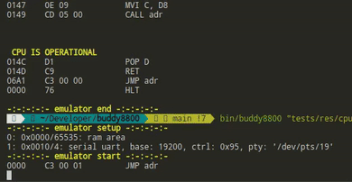
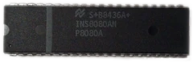
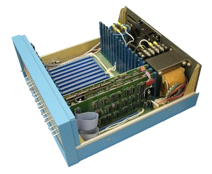
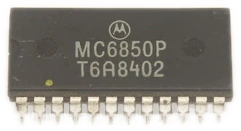
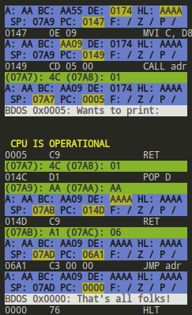

|
buddy8800
An Altair 8800 S-100 emulator that can run CP/M through a serial PTY.
|
An Intel 8080 emulated on an S-100 bus with a Motorola 6850 ACIA serial expansion card. Designed for running BASIC and CP/M over a PTY.

You can view the Doxygen documentation, which includes this README but much more descriptive content.
git submodule update --init --recursive to fetch Catch2 (v3) and toml11../build.sh from the root directory. Some flags are listed next.bin/ directory.By default, the build script will output a release build that has no tracing and with high optimization. To customize this behavior, some flags are available:
| Short Flag | Long Flag | Action | Default |
|---|---|---|---|
-d | --debug | Output a debug build, keeping symbol labels and disabling optimization | |
-r | --release | Output a release build, enabling optimization | Enabled |
--trace | Enable tracing, outputting information about the emulator's state after each instruction | ||
--trace-essential | Enable tracing only for the listing of executed instructions, not the full state | ||
-T | --tests | Build with tests enabled, compiling and running the Catch2 tests through CTest | |
-P | --perf-stat | Run performance metrics at the end of the build, then show the results. | |
--perf-report | Run performance metrics and let the user browse detailed results. | ||
-V | --memcheck | Run Valgrind's Memcheck tool on the final executable. |
Development builds are usually compiled with ./build.sh -d -T.
Note: Make sure you have config.toml placed in the same directory as the final executable. This file contains the configuration for the emulator, such as what cards to place and where.
You can either call the emulator from CLI passing pairs of file locations for ROMs and their load addresses, or set these loads directly in the configuration file for a more permanent solution. While you can load from the CLI, the config file will still need to contain information about what cards the system is setup with, in fact you could load these ROMs' data into address ranges belonging to any memory device in the system (not I/O since it belongs to a separate address space where an I/O request signal is detected).
Is equivalent (see Note) to:
Note: The first pair of ROM and address provided by the CLI will generate a few reset vector instruction in the zero page to jump to the first loaded ROM. The config file allows you to specify the starting address for the program counter, which is not the same as the reset vector as it directly sets PC to the specified address, skipping the reset vector. Because of this, be wary of having a value in the config file when trying to load a ROM from the CLI, as the emulator will give priority to the config file provided PC value.
For loading from CLI, the size (range) of the data cards must be determined in the config file, while if using the load field in the config file, the size will be determined by the size of the binary to load. Here is an example of specifying range and not load, while using the CLI to load the data:
Note that this will not check if the binary file is too large for the specified range, and in which case will just continue writing to other cards in the system, which is expected behavior. The CLI loading utility allows you to load data in any range of memory as it serves exactly that purpose, even after having loaded a file already from a config file.
Much of this information is also immediately reported upon running the emulator during setup phase, allowing you to quickly see if the loaded configuration is correct.
Please check the highly descriptive config.toml file for a full list of options and their descriptions. The configuration file is used to specify the system's setup, such as what cards are placed in the system and where, as well as the initial state of the emulator.
For reference, here is a simple test machine setup (only the cards portion of the config file):
Here are some of the resources I used to figure out various aspects of this project
Overview
Intel 8080

cpudiag.bin program.Altair 8800

Motorola 6850 ACIA

CP/M
Software
And thank you to the Emulator Development and Lazy Developers Discord servers for general help and support!
First Contact!
